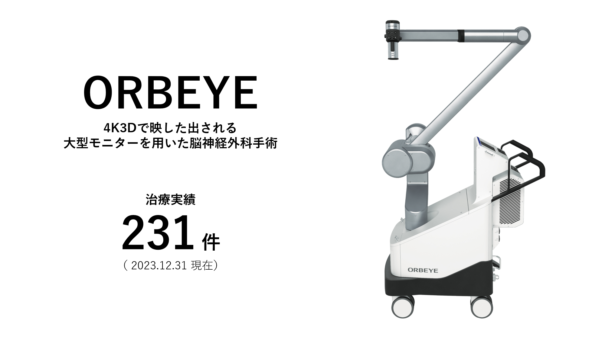
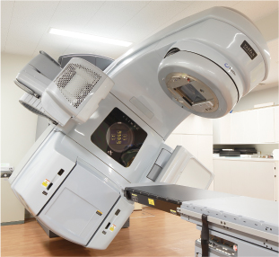

病院案内
ご来院の皆様へ
診療案内
当院へのご紹介
リクルート
健康管理センター
アクセス
記念日記
シェアする

心臓血管病センター
脳卒中センター

がん治療
チーム医療
医療機器のご案内
診療科案内
面会について
循環器内科
心臓血管外科
血管外科
脳神経外科
脳神経内科
外科
呼吸器外科
消化器内科
腎臓内科
泌尿器科
耳鼻咽喉科・頭頸部外科
婦人科
眼科
整形外科
形成外科
麻酔科・集中治療部
皮膚科
血液内科
総合内科
糖尿病･内分泌･代謝内科
呼吸器内科
放射線科
緩和ケア・精神科
病理診断科
救急部
膠原病リウマチ内科
部門案内
看護部
薬剤部
検査技師部
放射線技師部
リハビリテーション課
栄養管理課
臨床研究センター
事務
心臓血管病センター
脳卒中センター
がん治療
ロボット手術センター
チーム医療
診療の最前線
医療機器のご案内
こんな症状ありませんか？
受付時間 （診察開始8:30～）
新患/8:10～11:00 再来/8:10～11:30
＊詳しくは各診療科案内の外来医師担当表をご確認ください。
休診日
土・日曜日、祝日、年末年始
〒802-8555
福岡県北九州市小倉北区浅野3丁目2-1